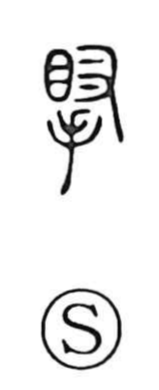

腕

Uncategorized
Kun: ude | On: wan
arm ・ skill
Explanation
A phono-semantic character: the right-side element 宛 serves as the phonetic and originally depicts a person kneeling in an ancestral mausoleum, bowing in reverence, with the rounded swell of the knees emphasized. Adding the flesh sign 月 marks it as a body part, yielding the image and meaning of a well-fleshed arm.